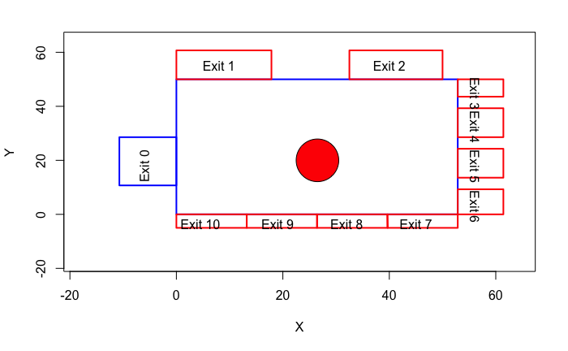
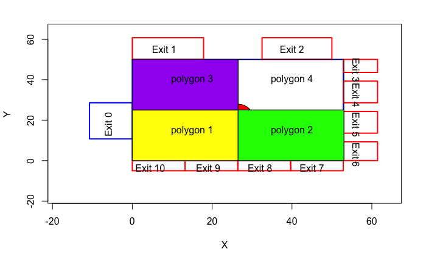
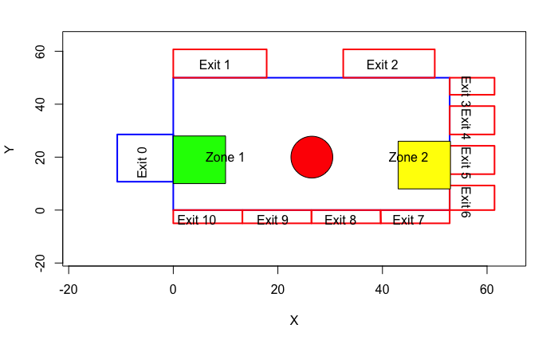

# First let's define an area in metres
gcs_env_m = function(){
plot((-250 /14):(900/14), (-250/14):(900/14), col = "white", xlab = "X", ylab = "Y") # draw an empty plot
polygon(x = c(0, 0, 740/14, 740/14),
y = c(0, 700/14, 700/14, 0),
border = "blue",
lwd = 2) # draw walls of a GCS
polygon(x= c(-150/14, 0, 0, -150/14),
y = c(400/14, 400/14, 150/14, 150/14),
border = "blue",
lwd = 2) # exit 0
polygon(x = c(0, 250/14, 250/14, 0),
y = c(850/14, 850/14, 700/14, 700/14),
border = "red",
lwd = 2) # exit 1
polygon(x = c(455/14, 700/14, 700/14, 455/14),
y = c(850/14, 850/14, 700/14, 700/14),
border = "red",
lwd = 2) # exit 2
polygon(x = c(740/14, 860/14, 860/14, 740/14),
y = c(700/14, 700/14, 610/14, 610/14),
border = "red",
lwd = 2) # exit 3
polygon(x = c(740/14, 860/14, 860/14, 740/14),
y = c(550/14, 550/14, 400/14, 400/14),
border = "red",
lwd = 2) # exit 4
polygon(x = c(740/14, 860/14, 860/14, 740/14),
y = c(340/14, 340/14, 190/14, 190/14),
border = "red",
lwd = 2) # exit 5
polygon(x = c(740/14, 860/14, 860/14, 740/14),
y = c(130/14, 130/14, 0, 0),
border = "red",
lwd = 2) # exit 6
polygon(x = c(555/14, 740/14, 740/14, 555/14),
y = c(0, 0, -70/14, -70/14),
border = "red",
lwd = 2) # exit 7
polygon(x = c(370/14, 555/14, 556/14, 370/14),
y = c(0, 0, -70/14, -70/14),
border = "red",
lwd = 2) # exit 8
polygon(x = c(185/14, 370/14, 370/14, 185/14),
y = c(0, 0, -70/14, -70/14),
border = "red",
lwd = 2) # exit 9
polygon(x = c(0, 185/14, 185/14, 0),
y = c(0, 0, -70/14, -70/14),
border = "red",
lwd = 2) # exit 10
# polygon(x = c(294, 252, 210, 210, 252, 294, 336, 336, 294),
# y = c(294, 294, 336, 378, 420, 420, 378, 336, 294),
# col = "red") # information booth (an obstacle)
plotrix::draw.circle(x = 371/14, y = 280/14,
radius = 56/14,
col = "red") # obstacle
# annotation of a plot
text(x = -84/14,
y = 252/14,
label = "Exit 0",
srt = 90)
text(x = 112/14,
y = 770/14,
label = "Exit 1")
text(x = 560/14,
y = 770/14,
label = "Exit 2")
text(x = 784/14,
y = 630/14,
label = "Exit 3",
srt = -90)
text(x = 784/14,
y = 455/14,
label = "Exit 4",
srt = -90)
text(x = 784/14,
y = 252/14,
label = "Exit 5",
srt = -90)
text(x = 784/14,
y = 42/14,
label = "Exit 6",
srt = -90)
text(x = 630/14,
y = -49/14,
label = "Exit 7")
text(x = 448/14,
y = -49/14,
label = "Exit 8")
text(x = 266/14,
y = -49/14,
label = "Exit 9")
text(x = 63/14,
y = -49/14,
label = "Exit 10")
}
gcs_env_m()3 Environment
In this section we will prepare the environment for further analysis. Concourse parameters: width(x) = 53, height(y) = 50;
3.1 Global

# now, let's convert the env into an sf object
matrix_walls = matrix(c(0,0,0,50,53,50, 53,0,0,0),
ncol = 2,
byrow = TRUE)
matrixlist_walls = list(matrix_walls)
polygon_walls = sf::st_polygon(matrixlist_walls)
# calculate area size (will be needed for measuring density)
gcs_area = polygon_walls |> sf::st_area()3.2 Divided
# divide gcs polygon by creating a grid
gcs_div = sf::st_make_grid(polygon_walls,
n = 2,
what = "polygons")
# convert gcs_div to an sf object
gcs_div_sf = gcs_div |>
sf::st_as_sf() |>
dplyr::rename(geom = x)
# find out the area size of each polygon
gcs_area_div = list()
for (i in 1:lengths(gcs_div_sf)){
gcs_area_div[[i]] = sf::st_area(gcs_div_sf[[i]])
# print(gcs_area_div)
}
# make it a vector
gcs_area_div = gcs_area_div |>
unlist() |>
as.vector()gcs_env_m()
gcs_div_sf |> plot(add = T)
gcs_div_sf[1,] |> plot(add = T, col = "yellow")
gcs_div_sf[2,] |> plot(add = T, col = "green")
gcs_div_sf[3,] |> plot(add = T, col = "purple")
text(x = 15,
y = 15,
label = "polygon 1")
text(x = 40,
y = 15,
label = "polygon 2")
text(x = 15,
y = 40,
label = "polygon 3")
text(x = 40,
y = 40,
label = "polygon 4")
3.3 Selected
Two areas have been selected based on the results of the previous work: https://github.com/Urban-Analytics/uncertainty/blob/master/gcs/process.ipynb Hence, it’s zone 1 (exit 0) and zone 2 (around exit 5) One cell is 2x2, each zone is 5 (width) and 6 (length) cells, thus 10 and 12 metres accordingly
Zone 1 is next to exit 0, thus its length has been left equal to the length of the gates. The width has been approximated to 10 metres (1 pixel = 2 metres).
Zone 2 is on the opposite side to Zone 1 and is 1 pixel below comapred to Zone 1, thus around exit 5.
## zone 1 (it's next to exit 0)
gcs_env_m()
polygon(x = c(10, 0, 0, 10),
y = c(28, 28, 10, 10),
border = "blue",
lwd = 2)
## zone 2
# gcs_env_m()
polygon(x = c(53, 43, 43, 53),
y = c(26, 26, 8, 8),
border = "blue",
lwd = 2)
# zone 1 sf polygon
zone1_matrix = matrix(c(10, 28, 0, 28, 0, 10, 10, 10, 10, 28),
ncol = 2,
byrow = T)
zone1_matrix_list = list(zone1_matrix)
zone1 = sf::st_polygon(zone1_matrix_list)
# zone 2 sf polygon
zone2_matrix = matrix(c(53, 26, 43, 26, 43, 8, 53, 8, 53, 26),
ncol = 2,
byrow = T)
zone2_matrix_list = list(zone2_matrix)
zone2 = sf::st_polygon(zone2_matrix_list)
# checking where selected areas are
gcs_env_m()
zone1 |> plot(add = T, border = "green", lwd = 2)
zone2 |> plot(add = T, border = "green", lwd = 2)
# join both zones
zones = list(zone1, zone2)
# find out the area size of each polygon
gcs_area_sel = list()
for (i in 1:length(zones)){
gcs_area_sel[[i]] = sf::st_area(zones[[i]])
# print(gcs_area_div)
}
# make it a vector
gcs_area_sel = gcs_area_sel |>
unlist() |>
as.vector()gcs_env_m()
zones[[1]] |> plot(add = T, col = "green")
zones[[2]] |> plot(add = T, col = "yellow")
text(x = 10,
y = 20,
label = "Zone 1")
text(x = 45,
y = 20,
label = "Zone 2")